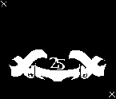

green  black
yellow
IMPORTANT!
Because some of the black overlaps the yellow, this stencil may not work if your using screenprinting ink. It works great with acrylic.
3 color by

INSTRUCTIONS ON HOW TO PRINT THIS THREE COLOR DESIGN
official website
myspace
wiki